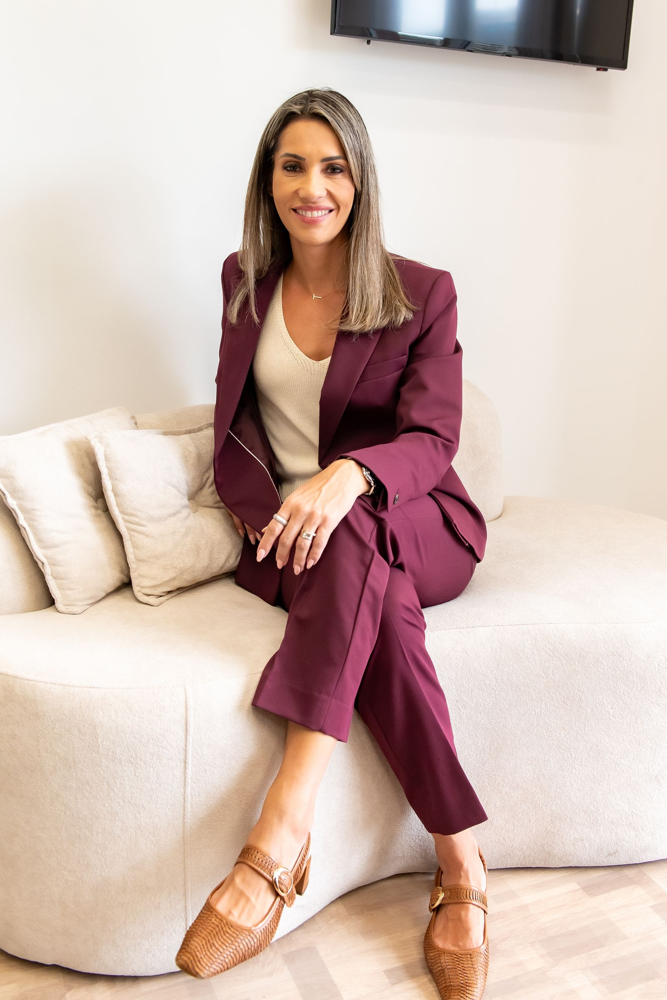
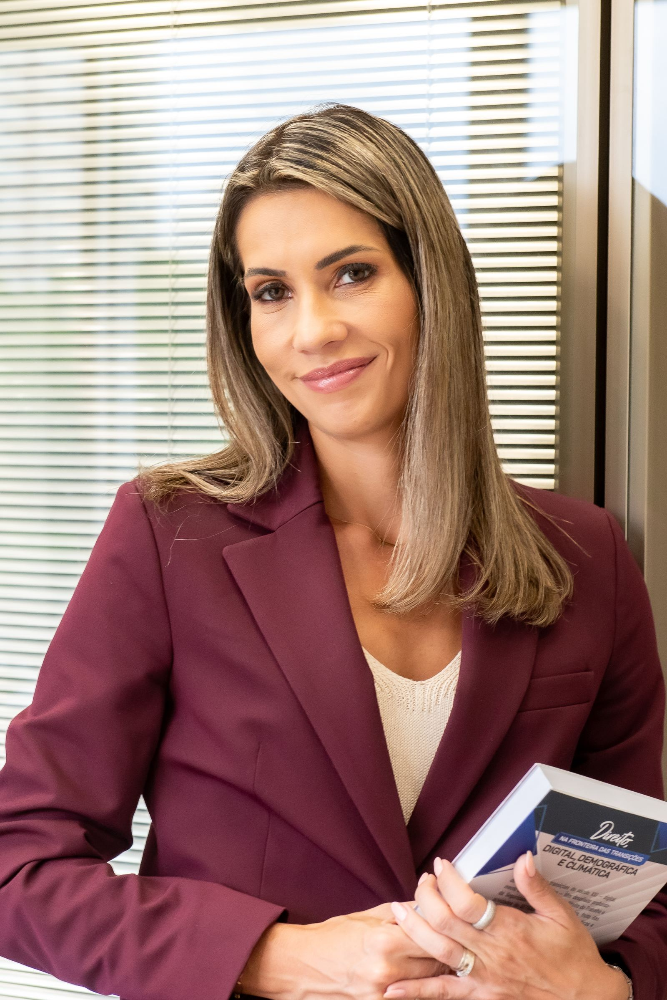
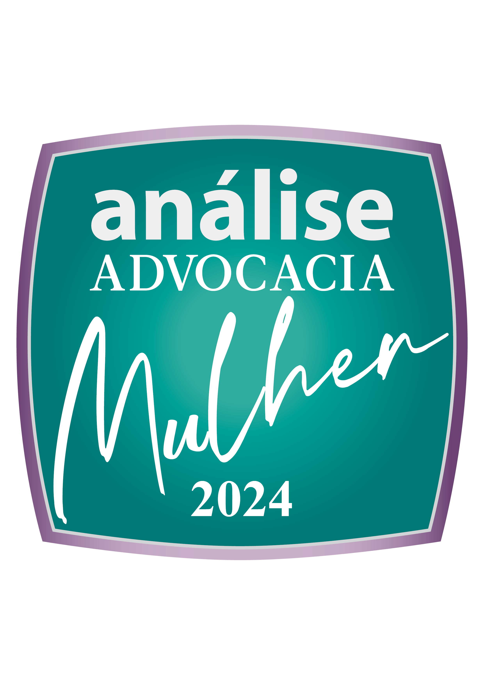
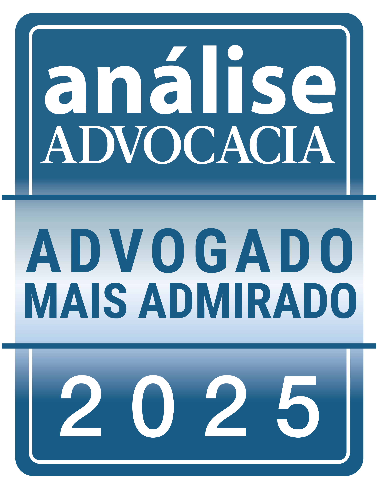
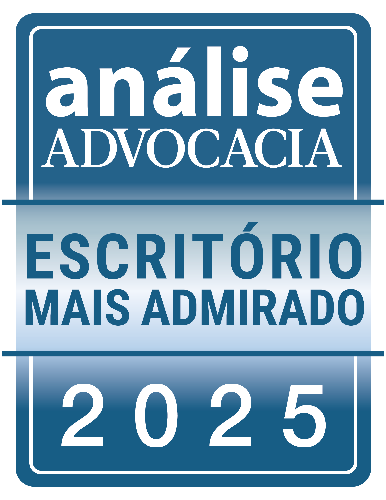
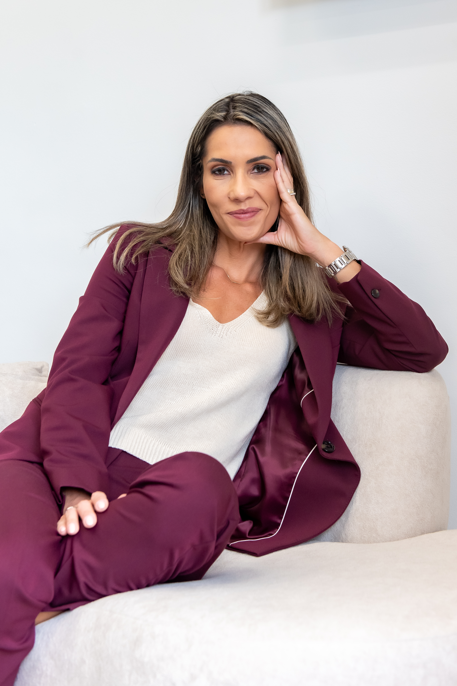

Tatiana G.
Ferraz
Andrade
Doutora em Direito do Trabalho e da Seguridade Social pela Faculdade de Direito da USP. Árbitra, professora e palestrante. Especialista em temas envolvendo inovação e tecnologia atrelados ao Direito do Trabalho.
Solicitar contato →
Tatiana G. Ferraz Andrade · Founder & Managing PartnerSólida
Base
Acadêmica

Trajetória
de Excelência
Participa como palestrante em conferências, seminários e palestras organizadas por órgãos de classe. Professora na Faculdade de Direito Damásio, na Universidade Presbiteriana Mackenzie e na Escola Superior de Advocacia (ESA OAB-SP). Autora de diversos artigos publicados em sites, jornais e revistas especializadas e livros. Forte atuação com questões envolvendo altos executivos, tema da tese de doutorado. Árbitra. É fluente em inglês e em espanhol.
Atuação direta nos debates sobre regulamentação das plataformas no Brasil.
Selos &
Premiações
Reconhecimentos que atestam o compromisso do escritório com a excelência jurídica e a valorização da advocacia de alta performance.



